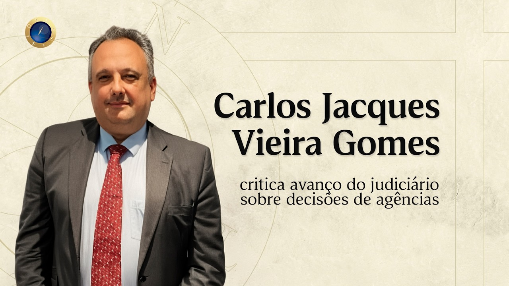
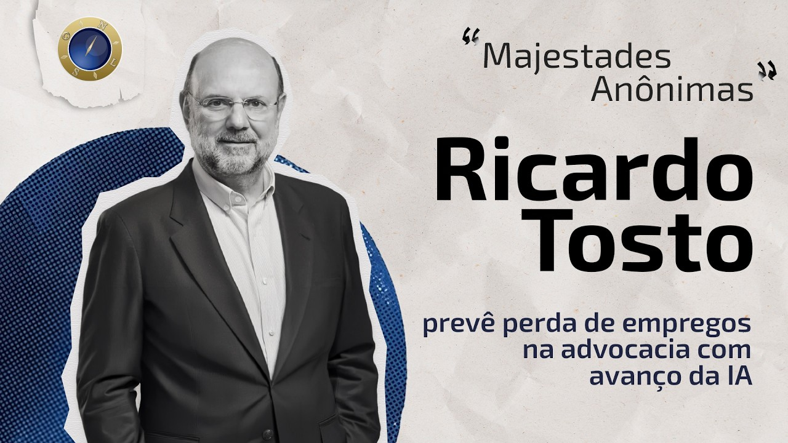
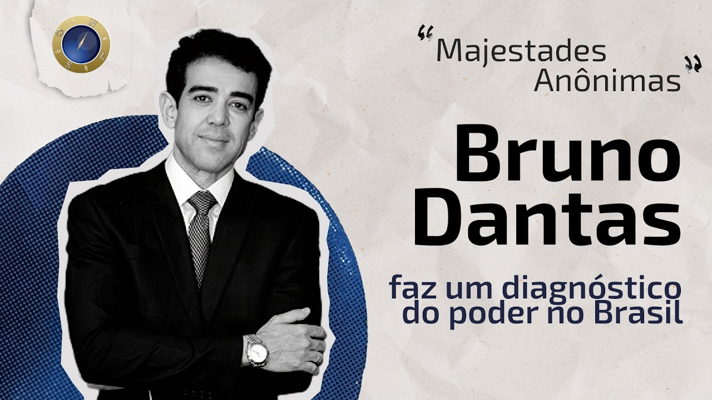
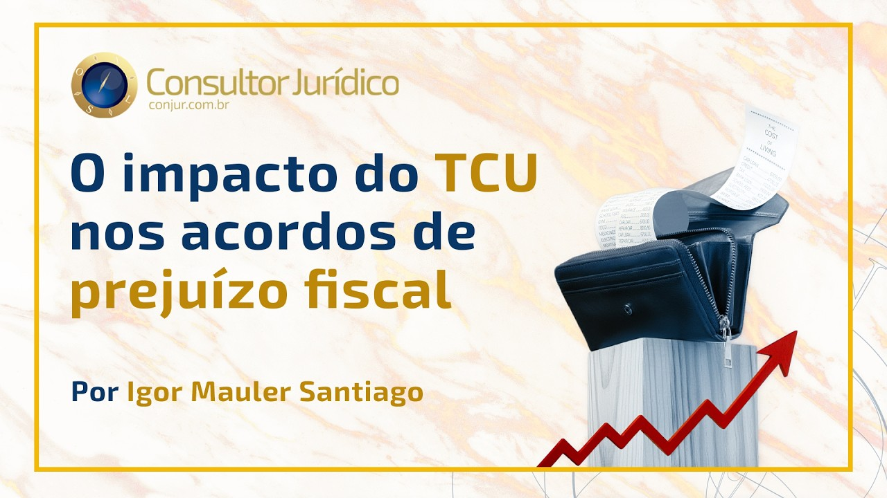

Portfólio — 2024/2026
Onze clientes, três especialidades, um padrão: cada marca com sua própria cara. Repare que a página muda de tonalidade conforme você passa por cada cliente — o site veste a identidade de cada um, como o nosso design faz.
↓ role para sentir as cores mudarem
Também editamos vídeo de verdade — entrevistas, cortes e conteúdo para o YouTube. Abaixo, dois trabalhos publicados na TV ConJur. Clique para assistir.

TV ConJur — Revisão judicial de decisões regulatórias (Cade)
TV ConJur — Ricardo Tosto: como se constrói um escritório de Advocacia
TV ConJur — Majestades Anônimas: a trajetória de Bruno Dantas
TV ConJur — TCU extrapola na forma e no mérito na transaçãoFora dos jobs, a gente treina o olho: releituras de cinema, tipografia experimental e conceitos que depois viram repertório para os clientes.
Gostou do que viu?